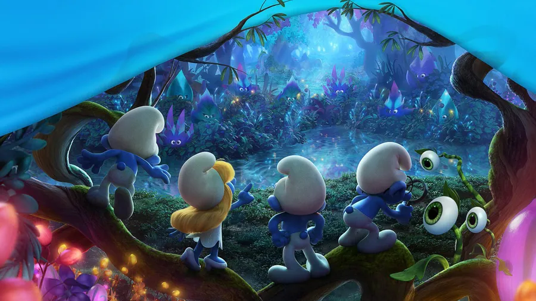

One evening in the Smurf Village, Papa Smurf declared it was time for something different—no mushroom soup, no berry pies. Instead, they were hosting a karaoke night. Smurfette was nervous, Brainy Smurf was already making a long speech about vocal technique, and Clumsy Smurf tripped over the microphone cord twice before things even started.
Just when the Smurfs thought the night might be a disaster, a surprise guest appeared—Santana Lopez from Glee. With her trademark sass, she marched up to the stage, raised an eyebrow at the chaos, and smirked.
“Move over, Smurfs,” she said. “Time to show you how it’s done.”
The Smurfs gasped. Could she really sing better than the whole village? Santana launched into a dazzling performance, her voice so strong it shook the mushroom rooftops. The Smurfs were entranced—except Grouchy Smurf, who muttered, “I hate show tunes.”
Not one to let anyone steal the spotlight, Smurfette grabbed a mic, and suddenly it was a Smurf-off! Santana riffed. Smurfette twirled. Hefty Smurf started breakdancing in the corner. By the end, the entire Smurf Village had turned into a full-on musical number, complete with harmonies, jazz hands, and one very confused Gargamel, who had shown up just to complain about the noise.
In the end, Santana declared, “Not bad, for blue people. Call me if you ever want backup vocals.” The Smurfs cheered, the karaoke night was saved, and Clumsy Smurf—still tangled in the mic cord—yelled, “Best. Night. Ever.”
And that’s how the Smurfs discovered that even the smallest village can turn into a big stage, especially when you mix a little music, a little mischief, and a lot of heart.
